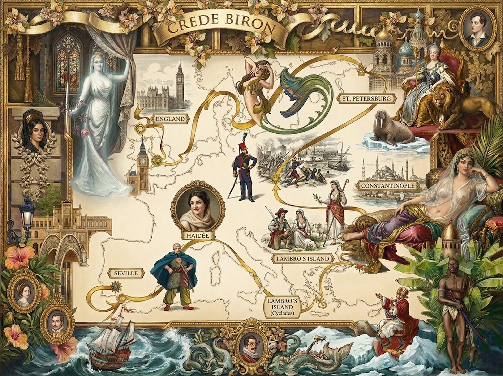

Cantos I–V: An Annotated Edition
Annotations by Peter Gallagher · petergallagher.net

On 15 July, 1819, London publisher John Murray issued 1,500 copies of Cantos I and II of Lord Byron's new poem Don Juan anonymously: he feared it might harm his author's brilliant reputation — and his own. Don Juan spurned the censorship and self-censorship of late Regency literature. Here was a major poet writing light-heartedly, with great energy and wit about "what everyone knows" of sex, fame, war, religion and liberty but few — no establishment figure, certainly, in 1819 — would discuss. Except Lord Byron.
The first edition was a roaring success (and quickly pirated). Murray continued, anxiously, to attempt to 'curate' the manuscripts of the following Cantos and, on 8 August 1821, published Cantos III–V. But Byron, exasperated with Murray's 'corrections' and misprints, used the Hunt brothers' radical press for all subsequent Cantos.
This annotated edition collects those first five Cantos. A second volume is planned for Cantos VI to X, which brings Juan on his "grand tour" to England… and, perhaps, a third.
How should you read Don Juan? "Just jump right in" is a good strategy. The verse of Don Juan is infallibly metric and canters on stanza-after-stanza with clever rhymes, hilarious imagery and brutal disregard for propriety, pomp and political correctness.
In every respect, Don Juan is a performance of, and by, Byron. Try reading out loud — even muttering to yourself — you'll quickly find yourself acting the part. It's a multi-layered performance: self-conscious and contrived for comic effect, so we can never be quite sure when Byron is play-acting and when (if ever) he is not. Still, he manages to make us feel we're having just as much fun as he is.
Byron probably did not have a clear idea of the whole poem when it was first published. Don Juan was issued as a sort of serial. Still, it's not the random journey that he liked to claim (especially to his anxious publisher, John Murray). The trail of Juan's travels — from his youth in Seville, through his Aegean love affair to his captivity in Constantinople, bravery at the siege of Ismail, prominence in St Petersburg and mission to the English court — is an adventure calculated by Byron to propel his satire and provide the variety of scenery and manners that — in a jokey kind of way — justifies the "epic" label that Byron ironically claims.
Then Byron wanders off the trail of his narrative a dozen times or more in every Canto. His diversions are almost as long as the narrative and are in some ways the best part of the poem. So… don't be afraid of wandering. Wandering in your reading is good: the brief tables of contents at the head of each Canto are a sort of guide to the "good bits" and you should absolutely take advantage of them. Remember, however, that the tables by no means capture all of the good bits. So be sure to "read between the lines" (of the tables) too.
As for the notes in the margin… They are, strictly, unnecessary: Byron's great poem remains "the most readable poem of its length ever written" (Virginia Woolf) and "by far the greatest comic poem in English" (Germaine Greer). The notes and illustrations are meant only to refresh the jokes, jibes, historical and literary references of Don Juan for readers 200 years later.
I owe a great debt to Peter Cochran's extensive commentary (PC in the text); to the notes in the Steffan/Penguin edition; and to the footnotes that Dr Isaac Asimov (IA in the text) provides in his beautiful edition of Don Juan, illustrated by Milton Glaser (Doubleday, 1973).
All the other stuff and remaining errors are mine. I'd be grateful to any reader who would let me know of such faults via petergallagher.net.
The annotations accompanying this edition of Cantos I–V of Don Juan are covered by a Creative Commons "Attribution 2.0 Generic (CC BY 2.0)" licence. So long as you give credit to Peter Gallagher at petergallagher.net, you may copy and redistribute the material in any medium or format, and adapt and build upon it for any purpose, even commercially. Archival copies have been uploaded to archive.org.